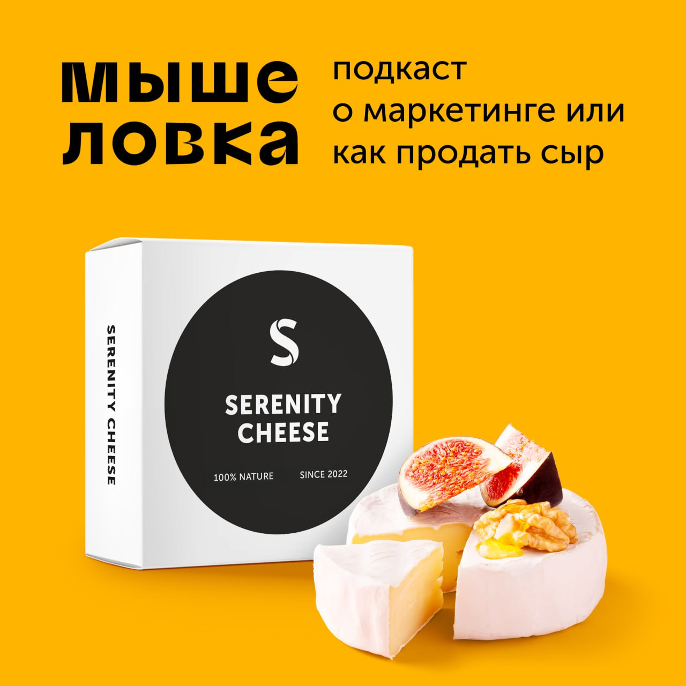

Он по-прежнему будет посвящен исследованию и классификации существенных конкурентных преимуществ.
Вспомним, какие уже обсудили:
— Культура (кстати, не так давно рассказал о важности культуры в кризисное время в подкасте)
— Дизайн и простота
— Снижения рисков и издержек, выгода и безопасность
В дальнейшем также буду делиться опытом создания и вывода на мировой рынок нашего сервиса, обладающего существенными преимуществами, о которых мы говорим здесь.
Сергей Прусс
